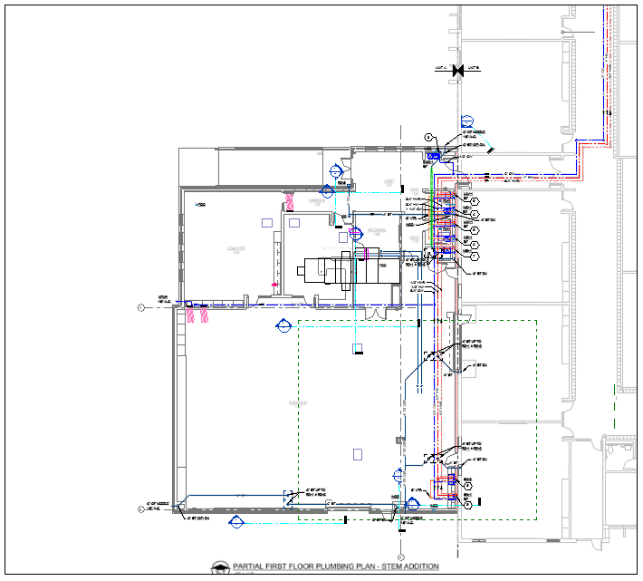
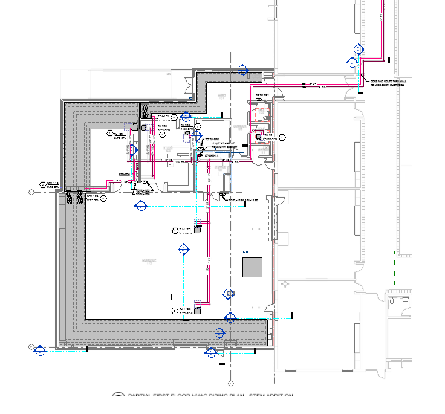
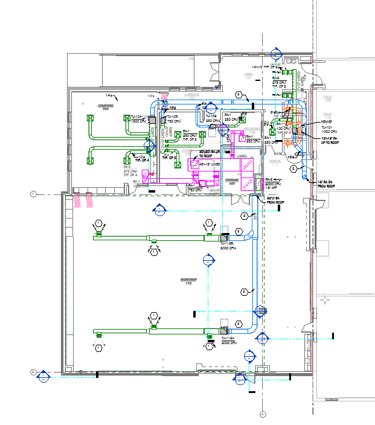
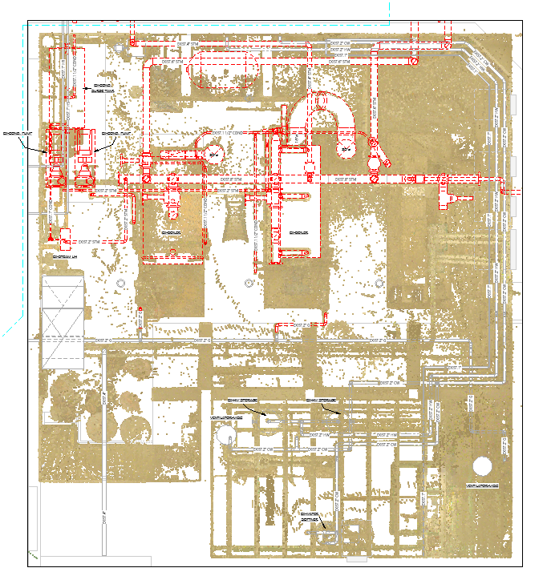
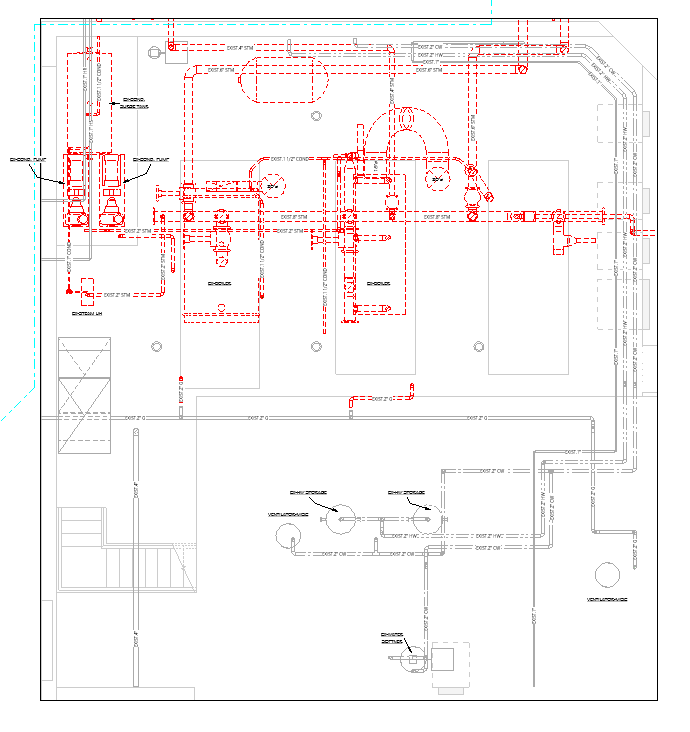
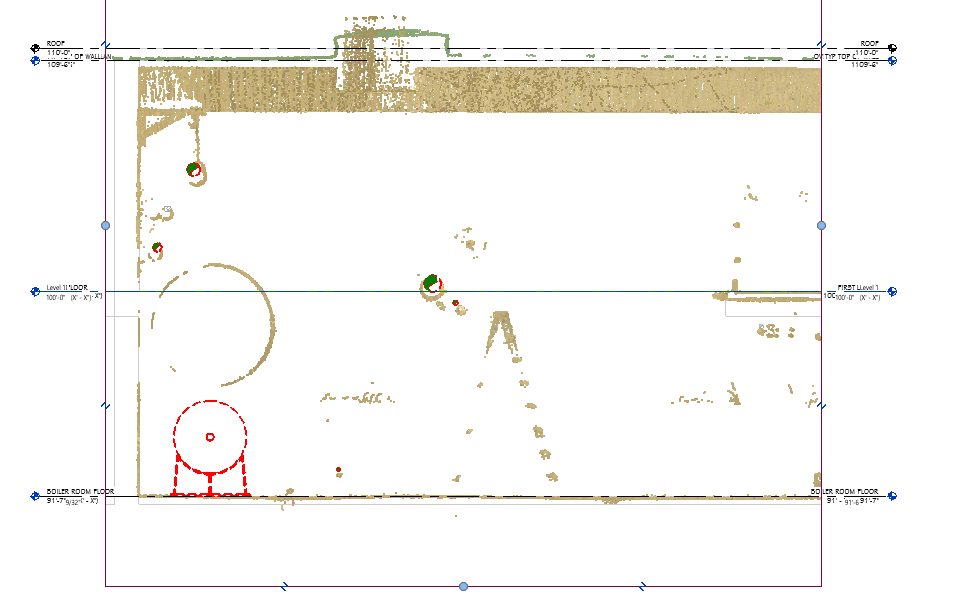
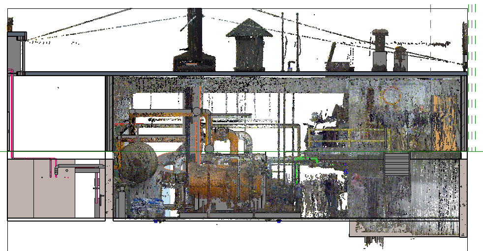
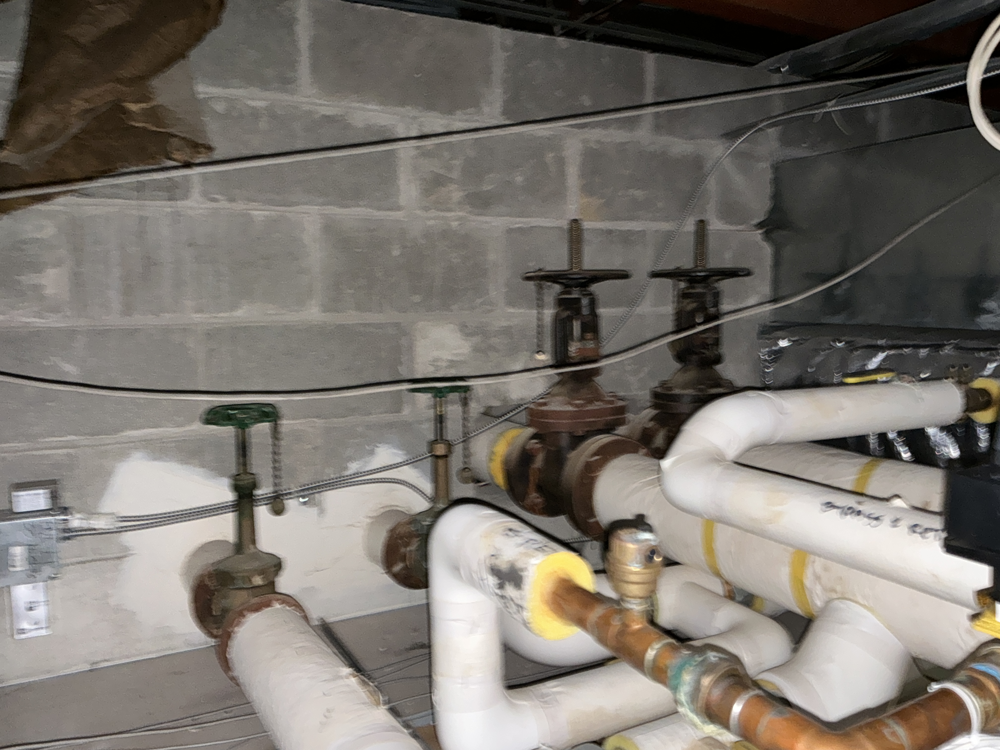
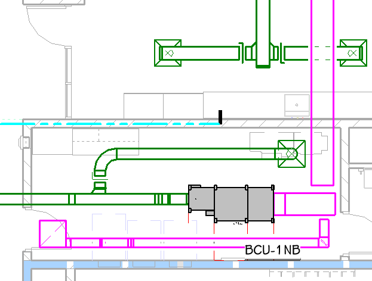
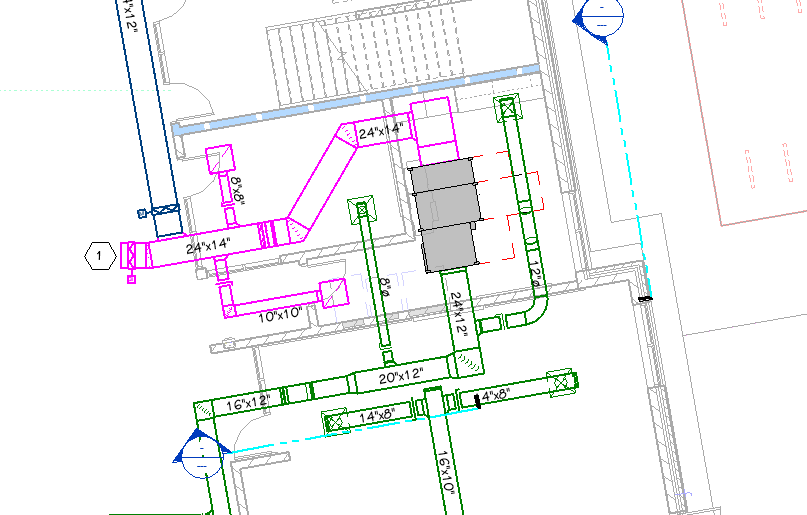

Onboarding & Infrastructure Design



When I joined Tower Pinkster as a Mechanical Design Intern, I stepped into a engineering environment dedicated to upgrading K-12 educational facilities across West Michigan. My initial challenge was settling into a professional workflow, which required me to quickly grasp the scale of commercial building infrastructure and the firm's specific design standards. To achieve this, I immersed myself in the company’s catolog of introductory design videos and documents, focusing heavily on understanding how Revit and Bluebeam operate as the central hubs for the mechanical engineering team. By deeply engaging with the training model, I successfully adapted to this new professional environment, establishing a solid foundation in these essential software tools and preparing myself to actively model complex existing building systems and designing new HVAC and hydronic systems.
Navigating Pointclouds




For my first live project as a Mechanical Design Intern, I was assigned to model the existing boiler room at a local school. My task was to navigate a dense point cloud model, utilizing existing site photos and original building drawings to construct an accurate 3D representation in Revit. Being immersed in a massive cloud of data points for my very first Revit project was initially overwhelming. However, by carefully cross-referencing the digital scans with physical photos, I overcame the learning curve and developed a strong ability to decipher which clusters of dots belonged to which specific mechanical system. As a result, I accurately modeled the domestic water and steam heating systems, clearly marked the components slated for demolition, and documented all wall penetrations. This meticulous documentation ensured that the contractors had highly precise measurements for their installation drawings
The "Aha" Moment!
[Replace with your 30-60 second Video]
[Replace with your 2-5 Supporting Visuals]
Over the course of the summer, I had the opportunity to interact with a multitude of mechanical systems, transitioning from basic textbook concepts to practical application. While some tasks, like HVAC ductwork and piping sizing, intuitively made sense and just required repetition to execute efficiently, my goal was to grasp the deeper reasoning behind complex system behaviors. My major breakthroughs over the summer came from actively analyzing fluid and airflow dynamics. I focused on understanding exactly why a reverse return loop provides inherent balancing advantages in a hydronic system, and how intentionally designing positive or negative CFM pressure zones controls air migration throughout different areas of a building. Mastering the "why" behind the design allows me to create more intentional, highly efficient building plans, fundamentally making me a more proactive and effective engineer.
Investigative Engineering on Site
[Replace with your 30-60 second Video]


Across five different site visits this summer, I was exposed to the physical realities of existing building infrastructure. Initially, stepping into a complex boiler room felt like a barrage of unfamiliar information. Armed with a site verification list based on existing drawings, my primary responsibility was to verify the layout of existing hydronic systems, only to quickly discover that the historical drawings were often highly inaccurate. I had to pivot to an "investigative engineering" approach. Instead of relying blindly on the plans, I physically traced the systems, checking individual rooms and hallways for the specific terminals providing heat and cooling to reverse-engineer the actual layout. This hands-on fieldwork significantly sharpened my technical intuition, making me highly proficient at identifying inconsistencies in historical documentation on-site and spotting patterns in undocumented building renovations.
Adapting to Cross-Disciplinary Clashes


While working on a new construction project, the blank slate meant that cross-disciplinary coordination was absolutely vital to the project's success. I began designing the new HVAC system early in the process, but as the electrical and hydronic teams began populating their elements into the shared Revit model, significant physical conflicts and design clashes arose in the tight ceiling spaces. Although HVAC ductwork typically takes spatial precedence due to its sheer size at Tower Pinkster, I had to adapt my original layouts to accommodate 3 foot clearance codes for electrical products. I reoriented the blower coil units and structurally rerouted the ductwork to navigate around these newly introduced constraints. By remaining flexible and actively coordinating with the other disciplines, I successfully resolved all system clashes, optimizing overall mechanical performance and reducing material costs while ensuring all safety clearances were met.